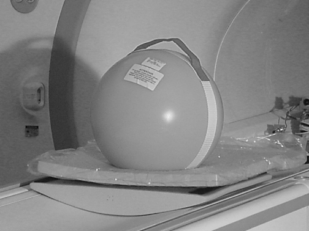
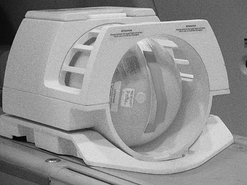
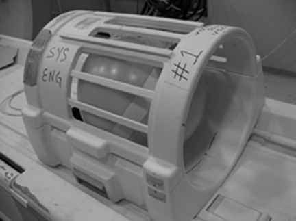

- 00000018WIA303C8E20GYZ
- id_131070904.0
- Mar 23, 2020 2:41:39 PM
High Order Shim Procedure
Prerequisites
| Required persons | Preliminary requirements | Procedure | Finalization |
|---|---|---|---|
| 1 | Not Applicable | 6 hours | Not Applicable |
| Item | Quantity | Effectivity | Part number | Manufacturer |
|---|---|---|---|---|
| Body SPT Sphere | 1 | - |
2135650-2 | - |
| 8 Channel HR Brain Phantom (Optional) | 1 | - |
46-265826G6 | - |
| 8 Channel HR Brain Coil (Optional) | 1 | - |
2317112-2 | - |
| ||||||||
| Condition | Reference | Effectivity |
|---|---|---|
|
Signa software fully operational, Software version is 11.0 M3 or higher. | - | - |
| - | - | |
| - | - | |
| - | - | |
| - | - | |
|
No image artifacts are present. | - | - |
|
Communication between the PC host computer and the High Order Shim power supply is functional. High Order Shim Power Supply Communication Functional Check, High Order Shim Power Supply Communication Functional Check. | - | - |
About this task
| Last Update | 03/27/2007 |
High Order Shim Power Supply Communication Functional Check
Procedure
FIELD MAP CREATION
About this task
It is recommended to generate the 48 cm FOV map first then follow with the 28 cm FOV map second when performing both maps in the same session.
Procedure
- Load and landmark a phantom.
- For the 48 cm FOV Field Map: Setup the Inner Sphere of the LVShim Phantom on the patient cradle. Figure 1.
- For the 28 cm FOV Field Map: Install the Head Coil and setup the Body SPT Sphere inside the Head Coil. Figure 3
- For the 28 cm FOV Field Map: Place the body SPT sphere on a pad and place the whole assembly in the location where the head coil would normally be located. See Figure 2
Figure 1. LVShim 30 cm Inner Sphere Phantom Setup 
Figure 2. Body TLT Sphere phantom set-up for Body Scan 
Figure 3. Body SPT 27 cm TLT Sphere Phantom In OLD Head Coil 
Figure 4. Body SPT 27 cm TLT Sphere Phantom In Newer Head Coil 
Running The Makereference Script
Procedure
Finalization
Procedure
- If there are any perceived issues with the supply, refer toHigh Order Shim Functional Checks .
- Perform saveInfo to save calibration files.
- If completed, put away all phantoms and tools.
- Do a check scan to insure the scanner is ready for patient scanning.